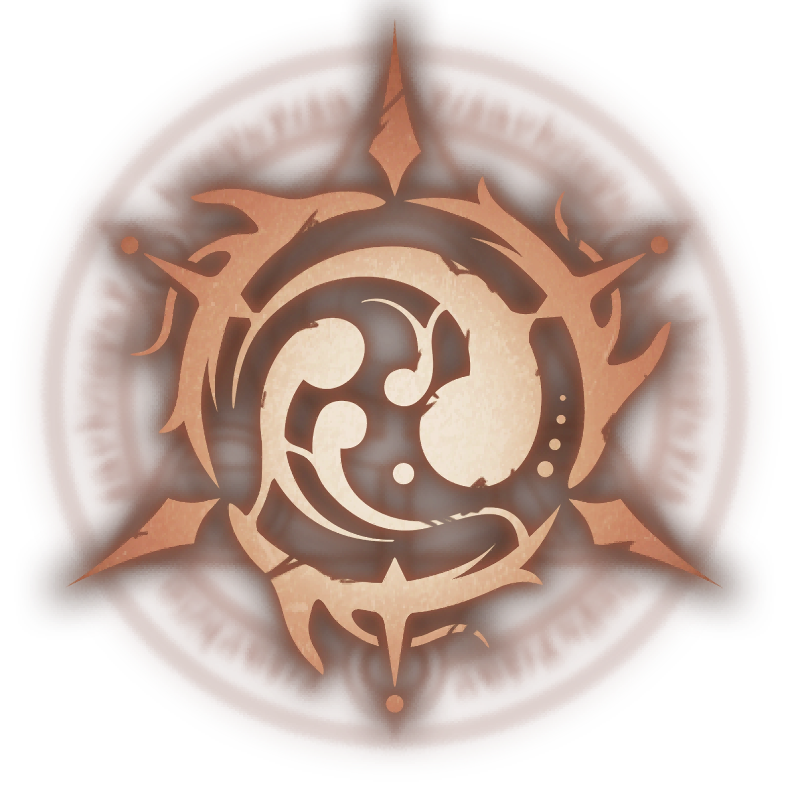
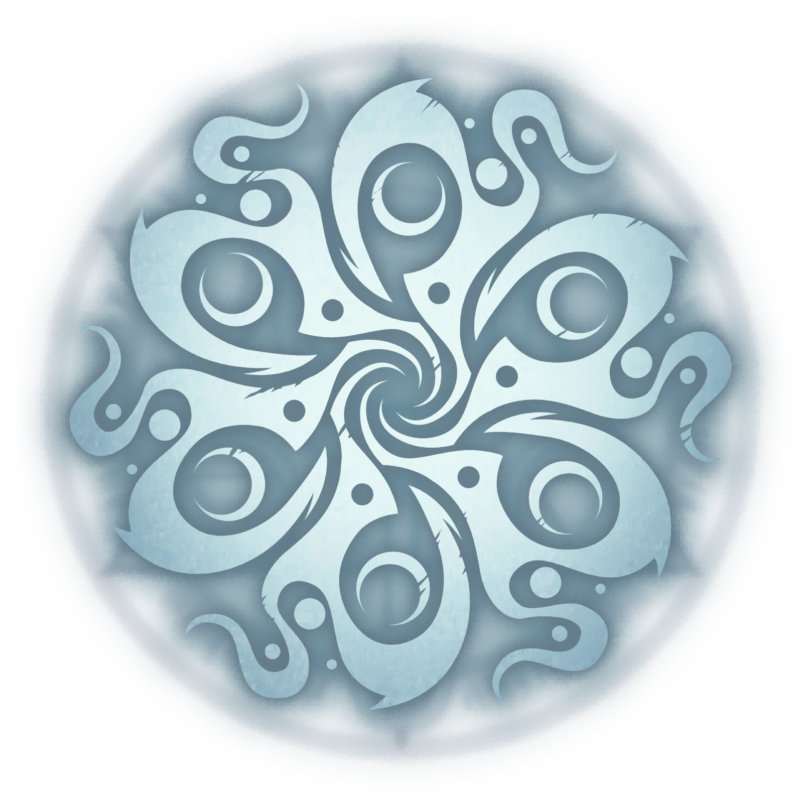
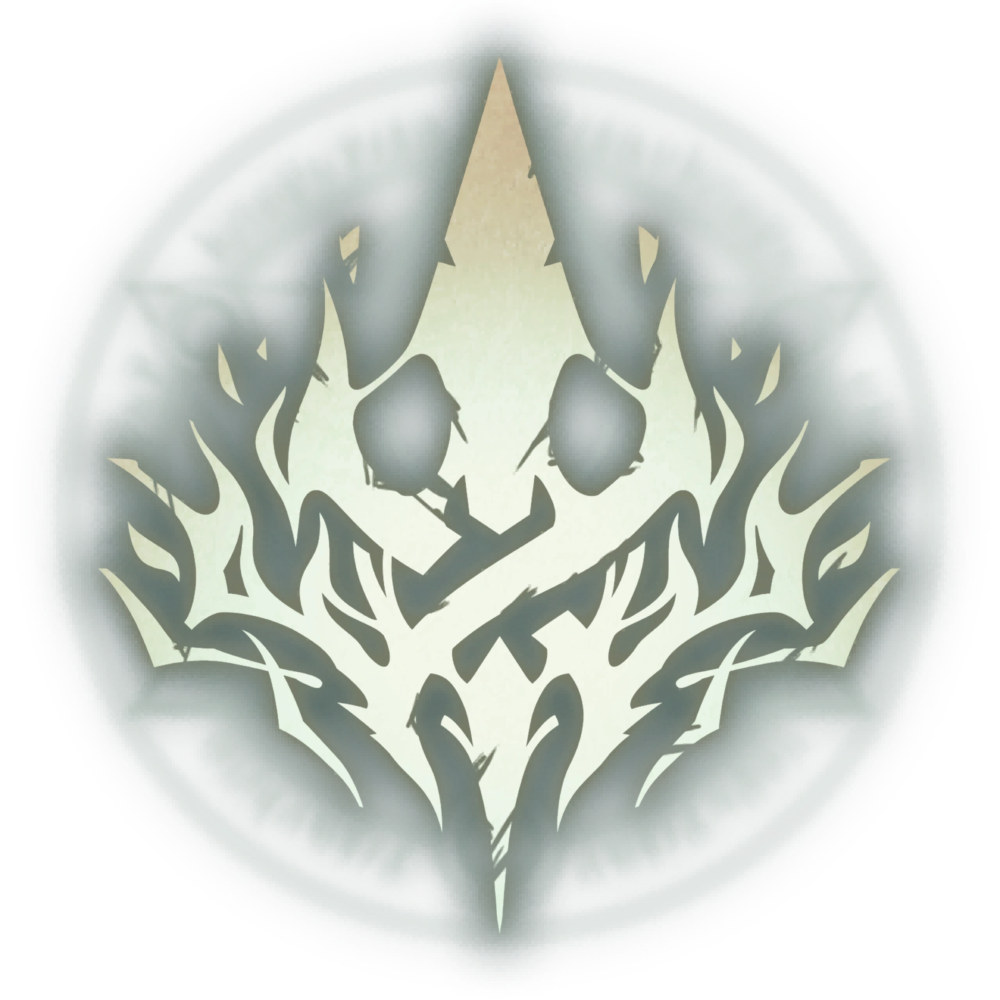
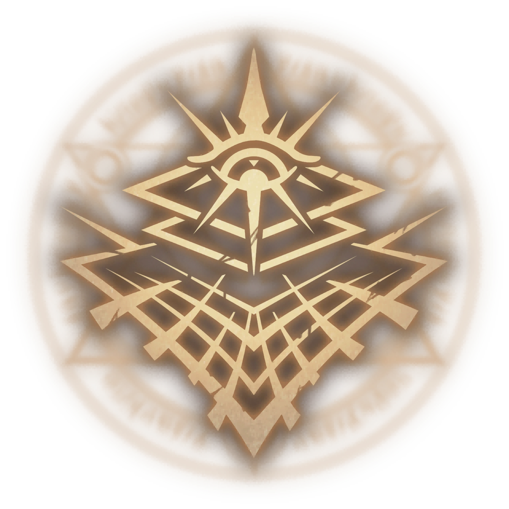

A guide to the pathwaysBrowse by divine grouping. Each guide includes the Sequence progression, pathway themes, associated figures, novel context, and references. Upper-Sequence and story details contain major spoilers.
Non-standard pathways are granted through Outer Deity Boons rather than the standard potion system. Select a pathway to read its profile, high-level abilities, and corruptive effects.
Non-Standard Pathways10 pathways
Mother Goddess of Depravity

Chaos PrimogenitorNon-standard · Boon pathway
Mother Tree of Desire
PatriarchNon-standard · Boon pathway
Son of Chaos

Chaos MistNon-standard · Boon pathway
Primordial Hunger
Tail-DevourerNon-standard · Boon pathway
Circle of Inevitability
Eternal AeonNon-standard · Boon pathway
Supernova Dominator
CondenserNon-standard · Boon pathway
Inextinguishable Ravings
EverlastingNon-standard · Boon pathway
Monarch of Decay

Second LawNon-standard · Boon pathway
High-Dimensional Overseer

Sublunary EyeNon-standard · Boon pathway
Goddess of Fate
Eternal EdictNon-standard · Boon pathway
For a cross-pathway summary, read the Outer Deities & Corruption guide.
Lord of Mysteries3 pathways
God Almighty5 pathways
Eternal Darkness3 pathways
Calamity of Destruction2 pathways
Demon of Knowledge2 pathways
Key of Light1 pathway
Goddess of Origin2 pathways
Father of Devils2 pathways
Anarchy2 pathways
Pathway names and groupings are based on the Pathways article on the Lord of the Mysteries Wiki. Sequence details are linked on each pathway page.